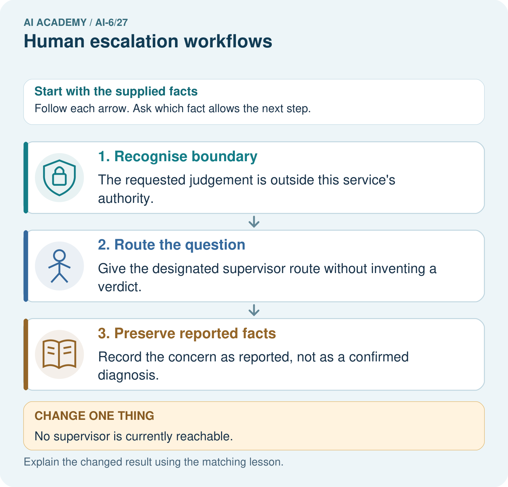
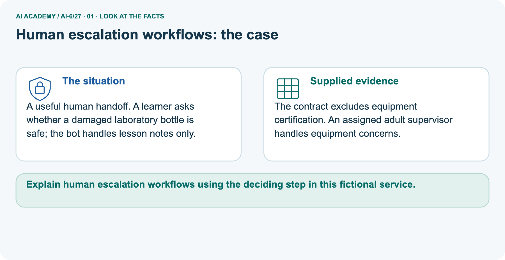
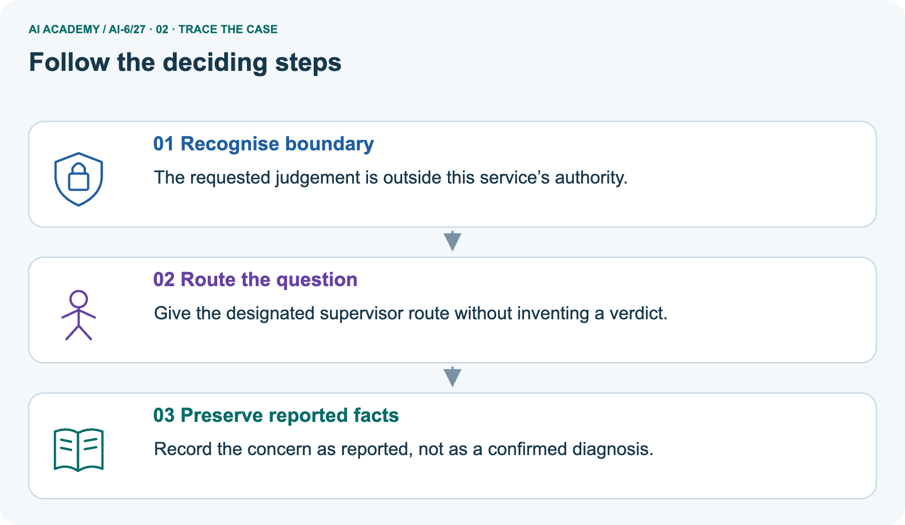
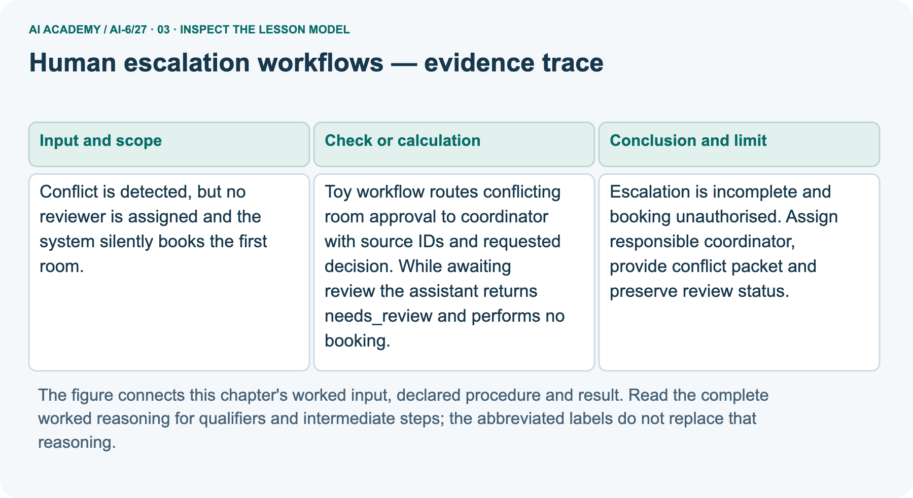
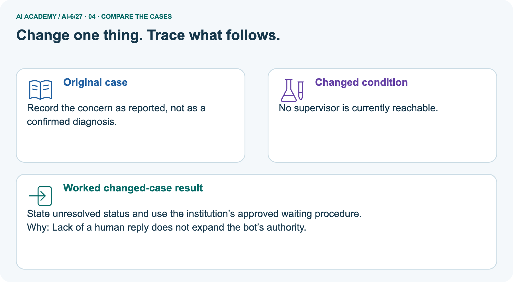
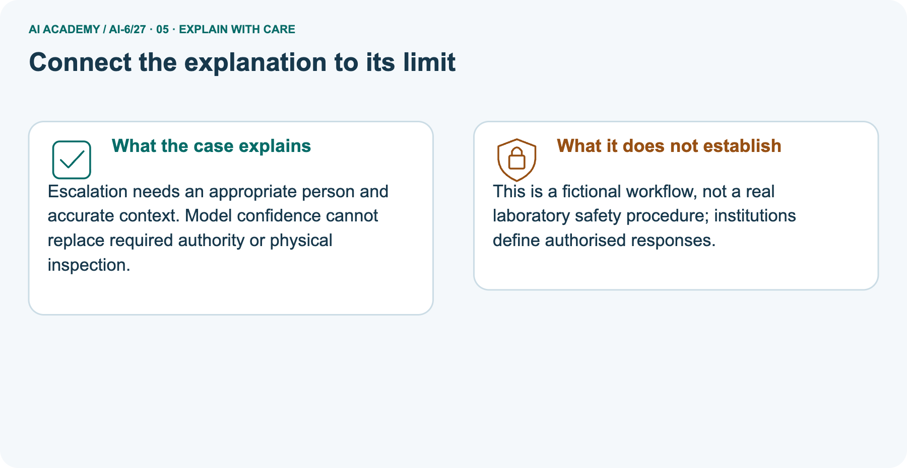
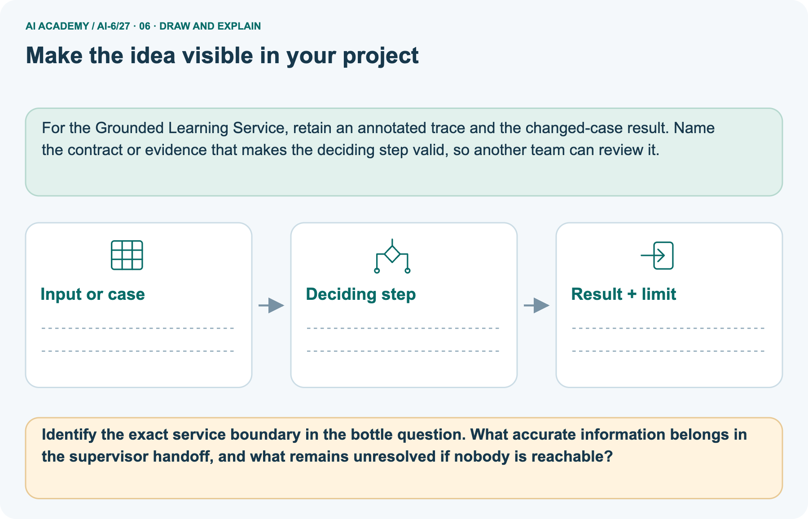

AI Academy · Level 6 · Grade 11 · Week 27 · Workbook
Human escalation workflows
Learn to understand, design, build, test and explain AI systems responsibly.
Project: Grounded Learning Service
THE CONNECTED WEEK
One complete reviewer handoff and pending-state record.
Keep case, reported facts, source IDs, requested decision, owner, deadline, fallback and actual communication evidence together.
Keep one habit: Recall → W1–W3/W5 → independent deadline case → handoff project → delayed return.
Main lesson · Section 1
Recall · Retrieve before notes
Keep this task’s inputs,rule and response together.
Complete task and evidence
Try the recall before opening notes. Then use a different colour or a labelled second line to correct your explanation.
Without opening the old lesson, explain one key idea from Incident investigation. Give an example and a mistake that the idea helps you avoid.
Without opening the old lesson, explain one key idea from Release and rollback. Give an example and a mistake that the idea helps you avoid.
Without opening the old lesson, explain one key idea from Caching and stale information. Give an example and a mistake that the idea helps you avoid.
Use this reference for the original W1–W3 and W5 exercises. The separately named independent case supplies its own changed facts; use those facts for that attempt before feedback.
Escalation routes unresolved decisions to an authorised person with sufficient context. It must define owner, deadline and fallback.
Toy workflow routes conflicting room approval to coordinator with source IDs and requested decision. While awaiting review the assistant returns needs_review and performs no booking.
Incident investigation
Release and rollback
Caching and stale information
Lesson reference for workbook practice
Main lesson · Section 5
W1 · Explain the current example
Keep this task’s inputs,rule and response together.
Complete task and evidence
Escalation routes unresolved decisions to an authorized person with sufficient minimized context, an owner, deadline and fallback. Main fictional room conflict: source S1 says B12, S2 says D4. With no reviewer, silently booking the first room is unauthorized.
Assign the trusted coordinator, include case/source IDs and requested approval decision, and keep needs_review with no booking while awaiting a permitted decision. Added local deadline is virtual minute 30: equality is overdue but never approval. Wrong-role or unreachable owner leaves unresolved status. A handoff-ready packet is not evidence of sending, receipt, review or approval.
Separate picture lesson-notes bot cannot certify a reported damaged bottle; preserve “learner reports damage, physical condition not verified” and use the designated supervisor route. If unreachable, the bot gains no authority; real institutions define actual responses. Only a separately authorized configured notification channel may be used.
Code makes local fictional packets and decisions with empty effect/notification traces; it sends no messages, books nothing and provides no equipment verdict.
Explain the weekly mechanism in your own words. Use the worked scenario to name its input, decision rule and output.
Main lesson · Section 6
W2 · Trace the calculation
Keep this task’s inputs,rule and response together.
Complete task and evidence
Escalation routes unresolved decisions to an authorized person with sufficient minimized context, an owner, deadline and fallback. Main fictional room conflict: source S1 says B12, S2 says D4. With no reviewer, silently booking the first room is unauthorized.
Assign the trusted coordinator, include case/source IDs and requested approval decision, and keep needs_review with no booking while awaiting a permitted decision. Added local deadline is virtual minute 30: equality is overdue but never approval. Wrong-role or unreachable owner leaves unresolved status. A handoff-ready packet is not evidence of sending, receipt, review or approval.
Separate picture lesson-notes bot cannot certify a reported damaged bottle; preserve “learner reports damage, physical condition not verified” and use the designated supervisor route. If unreachable, the bot gains no authority; real institutions define actual responses. Only a separately authorized configured notification channel may be used.
Code makes local fictional packets and decisions with empty effect/notification traces; it sends no messages, books nothing and provides no equipment verdict.
Conflict is detected, but no reviewer is assigned and the system silently books the first room. Show the intermediate steps and give the conclusion with its scope.
Main lesson · Section 7
W3 · Repair a misconception
Keep this task’s inputs,rule and response together.
Complete task and evidence
Escalation routes unresolved decisions to an authorized person with sufficient minimized context, an owner, deadline and fallback. Main fictional room conflict: source S1 says B12, S2 says D4. With no reviewer, silently booking the first room is unauthorized.
Assign the trusted coordinator, include case/source IDs and requested approval decision, and keep needs_review with no booking while awaiting a permitted decision. Added local deadline is virtual minute 30: equality is overdue but never approval. Wrong-role or unreachable owner leaves unresolved status. A handoff-ready packet is not evidence of sending, receipt, review or approval.
Separate picture lesson-notes bot cannot certify a reported damaged bottle; preserve “learner reports damage, physical condition not verified” and use the designated supervisor route. If unreachable, the bot gains no authority; real institutions define actual responses. Only a separately authorized configured notification channel may be used.
Code makes local fictional packets and decisions with empty effect/notification traces; it sends no messages, books nothing and provides no equipment verdict.
A report omits this qualification: Escalation without a responsible actor and declared fallback cannot guarantee resolution. Explain how omitting it could change a reader's interpretation, and write an accurate replacement.
Main lesson · Section 9
W5 · Explain the limitation
Keep this task’s inputs,rule and response together.
Complete task and evidence
Escalation routes unresolved decisions to an authorized person with sufficient minimized context, an owner, deadline and fallback. Main fictional room conflict: source S1 says B12, S2 says D4. With no reviewer, silently booking the first room is unauthorized.
Assign the trusted coordinator, include case/source IDs and requested approval decision, and keep needs_review with no booking while awaiting a permitted decision. Added local deadline is virtual minute 30: equality is overdue but never approval. Wrong-role or unreachable owner leaves unresolved status. A handoff-ready packet is not evidence of sending, receipt, review or approval.
Separate picture lesson-notes bot cannot certify a reported damaged bottle; preserve “learner reports damage, physical condition not verified” and use the designated supervisor route. If unreachable, the bot gains no authority; real institutions define actual responses. Only a separately authorized configured notification channel may be used.
Code makes local fictional packets and decisions with empty effect/notification traces; it sends no messages, books nothing and provides no equipment verdict.
For the worked scenario, propose one additional case that could reveal a failure, describe its expected outcome before running it, and explain what would need to remain fixed for a fair comparison.
Do not reuse W4 as a new final test after receiving feedback.
Main lesson · Section 4
Try alone · Selected transfer
Keep this task’s inputs,rule and response together.
Complete task and evidence
Reviewer deadline is 16:00; no reply by 16:00. Policy says remain pending, not auto-approve. Decide.
Attempt this case before feedback. Record any help. Earlier examples below are further practice; a case already practised with feedback cannot establish fresh transfer.
Independent case: Apply a new case independently
Main lesson · Section 10
Project · Keep the service evidence
Preserve the contract, inputs, observed outcomes and limits.
Complete task and evidence
Add a labelled human escalation workflows evidence sheet to Grounded Learning Service. Show how you can explain the mechanism and terminology of human escalation workflows.
Use the supplied fictional case and keep its inputs, intermediate steps, calculation or prediction, and limitation. Connect this record to last week’s record; a matching answer without a trace is insufficient.
Main lesson · Section 11
Feedback · Repair and return
Keep this task’s inputs,rule and response together.
Complete task and evidence
Revisit this idea with your teacher after a delay. Familiarity is different from explaining and using it on a changed case.
| Evidence | My record |
|---|---|
| Worked alone / hint / model | |
| First step I repaired and why | |
| New case checked later; date and result | |
| What I can now explain without notes | |
| One remaining question |
Reference bank and extra practice
Choose the reference that helps your next step.
Reference · Supported W2 record
Reference · Section 2
Reference · Supported W2 record
Keep this task’s inputs,rule and response together.
Complete task and evidence
Use W2: Trace the worked case for Human escalation workflows. Record the answer once; the lesson and workbook refer to the same attempt.
| Given inputs | Procedure I chose | Middle steps | Result and check |
|---|---|---|---|
Extra practice · Individual reasoning check
Reference · Section 3
Extra practice · Individual reasoning check
Keep this task’s inputs,rule and response together.
Complete task and evidence
Use the worked case for Human escalation workflows. Proposed explanation: “The worked result establishes every future case”. Decide whether this explanation is supported.
Point to the step or supplied fact that decides; explain your repair if needed.
Reference · Earlier W4 response copy
Reference · Section 8
Reference · Earlier W4 response copy
Keep this task’s inputs,rule and response together.
Complete task and evidence
Reviewer deadline is 16:00; no reply by 16:00. Policy says remain pending, not auto-approve. Decide.
Extra practice · Pictured case
Reference · Section 12
Extra practice · Pictured case
Keep this task’s inputs,rule and response together.
Complete task and evidence
A useful human handoff. A learner asks whether a damaged laboratory bottle is safe; the bot handles lesson notes only.
The contract excludes equipment certification. An assigned adult supervisor handles equipment concerns.
Identify the exact service boundary in the bottle question. What accurate information belongs in the supervisor handoff, and what remains unresolved if nobody is reachable?
Support used: alone / hint / worked example. This record is practice evidence.
Project connection: For the Grounded Learning Service, retain an annotated trace and the changed-case result. Name the contract or evidence that makes the deciding step valid, so another team can review it.



Reference · Project milestone
Reference · Section 13
Reference · Project milestone
Keep this task’s inputs,rule and response together.
Complete task and evidence
Project: Grounded Learning Service
Current milestone: Prepare the demonstration. Gather reproducible instructions, evidence, access checks and remaining limitations.
For the Grounded Learning Service, retain an annotated trace and the changed-case result. Name the contract or evidence that makes the deciding step valid, so another team can review it.
| Evidence to keep | My record |
|---|---|
| This week’s input and deciding step | |
| Prediction and actual result (or labelled paper trace) | |
| One change since the previous checkpoint and why | |
| One error or limit and the next test |
Extra practice · Predict,check and repair
Reference · Section 14
Extra practice · Predict,check and repair
Keep supported feedback separate from the independent case.
First supported question and optional hint
A useful human handoff. A learner asks whether a damaged laboratory bottle is safe; the bot handles lesson notes only.
Which labelled step matches this detail? Record the concern as reported, not as a confirmed diagnosis.
1. Recognise boundary
2. Route the question
3. Preserve reported facts
Hint if needed: Read the steps in the pictorial case. Match the supplied detail to the stage that performs or records it.
Practice 1: explain the deciding evidence
Check after the first attempt
After your attempt, compare with the supported explanation: Preserve reported facts Record the concern as reported, not as a confirmed diagnosis. Escalation needs an appropriate person and accurate context.
Model confidence cannot replace required authority or physical inspection.
Changed-case question and optional hint
Changed-case practice: No supervisor is currently reachable. Which conclusion is supported by the supplied facts?
1. State unresolved status and use the institution’s approved waiting procedure.
2. We can decide the result without examining the changed input or the procedure.
3. This one example guarantees correct results for every future input.
Hint if needed: Use the changed condition and the deciding step in the pictorial trace. The answer must say what follows from those facts.
Practice 2: explain the deciding evidence
Check after the changed attempt
After your attempt, compare with the supported explanation: State unresolved status and use the institution’s approved waiting procedure. Lack of a human reply does not expand the bot’s authority.
Repair and retain the record
Review Incident investigation (ai-6/26). Goal: Explain the mechanism and terminology of incident investigation. Short practice: Order the three incident records and locate the old evidence version.
How does the investigation change if the trace instead retrieves version 6 but drafts room C?. Return to this week and explain what you changed.
Review Release and rollback (ai-6/24). Goal: Explain the mechanism and terminology of release and rollback. Short practice: Compute A’s and B’s correctness percentages.
Why is B still blocked, and does passing a fresh privacy check automatically satisfy every release gate?. Return to this week and explain what you changed.
Review Caching and stale information (ai-6/21). Goal: Explain the mechanism and terminology of caching and stale information. Short practice: Identify the version mismatch in the cached 09:00 answer.
What should the first version -5 request return, and what permits a later version -5 cache hit?. Return to this week and explain what you changed.
Use Download completed work in the hosted lesson to export your answers, reflections, practice feedback and code-run evidence. Open the HTML copy to read or print it.
Drafts stay in this browser when storage is available; clear drafts on a shared device.
Earlier wording, alternatives and picture transcripts
Use this supported practice once, in the browser or on paper. Keep the reserved independent assessment for a separate first attempt before teacher feedback.
Repair a missing building block
Keep your completed work
Reference · Six-picture response sheets
Reference · Section 15
Reference · Six-picture response sheets
Choose the picture that helps explain the current step.
01. Human escalation workflows: the case



A useful human handoff. A learner asks whether a damaged laboratory bottle is safe; the bot handles lesson notes only. Supplied facts: The contract excludes equipment certification.
An assigned adult supervisor handles equipment concerns.
Point to the given fact that matters most. Explain why it matters.
02. Follow the deciding steps



Recognise boundary: The requested judgement is outside this service’s authority. → Route the question: Give the designated supervisor route without inventing a verdict. → Preserve reported facts: Record the concern as reported, not as a confirmed diagnosis.
Point to each numbered stage and explain which recorded input it uses.
03. Human escalation workflows — evidence trace



Human escalation workflows — evidence trace.
Conflict is detected, but no reviewer is assigned and the system silently books the first room. | Toy workflow routes conflicting room approval to coordinator with source IDs and requested decision.
While awaiting review the assistant returns needs_review and performs no booking. | Escalation is incomplete and booking unauthorised. Assign responsible coordinator, provide conflict packet and preserve review status.
Read the labels and values. Explain the relationship the model shows.
04. Change one thing. Trace what follows.



Original case: Record the concern as reported, not as a confirmed diagnosis. Changed condition: No supervisor is currently reachable.
Expected result: State unresolved status and use the institution’s approved waiting procedure. Reason: Lack of a human reply does not expand the bot’s authority.
Predict before checking the worked changed-case result. Name what changed and what the supplied facts allow you to conclude.
05. Connect the explanation to its limit



Escalation needs an appropriate person and accurate context. Model confidence cannot replace required authority or physical inspection.
Limit: This is a fictional workflow, not a real laboratory safety procedure; institutions define authorised responses.
Explain the case, then point to a limit on the claim.
06. Make the idea visible in your project



For the Grounded Learning Service, retain an annotated trace and the changed-case result. Name the contract or evidence that makes the deciding step valid, so another team can review it.
Draw your input, deciding step, result and limit. Supported question: Identify the exact service boundary in the bottle question.
What accurate information belongs in the supervisor handoff, and what remains unresolved if nobody is reachable?
Draw your project trace and justify the deciding step using evidence.